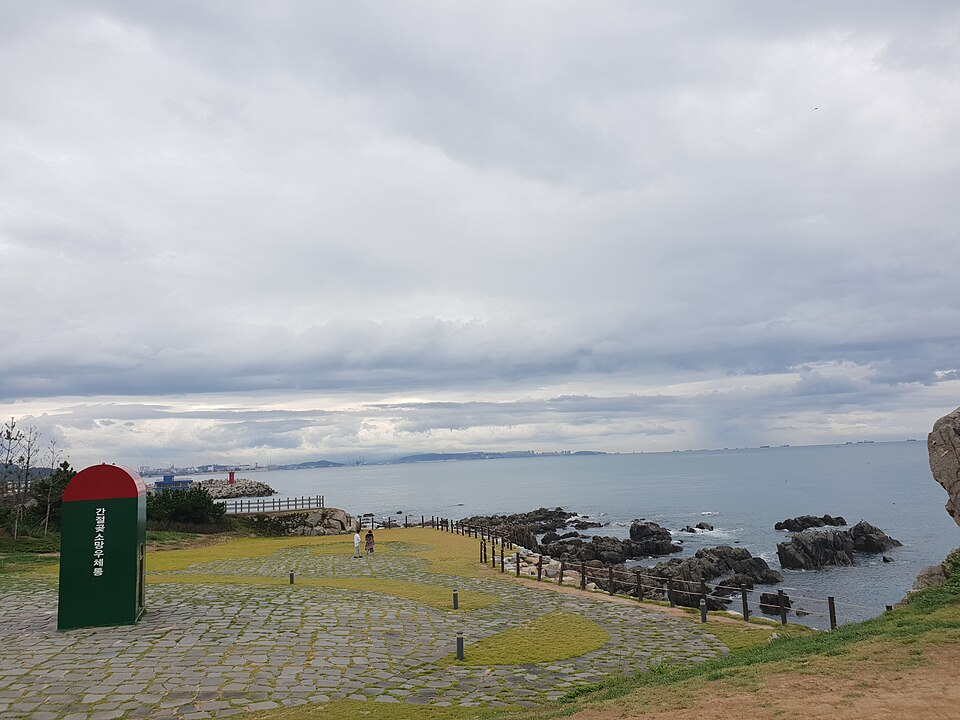

울주 검정고시 — 교대·야간 근무를 하면서 공부하는 법

“매주 화·목 저녁 8시에 공부한다” 같은 계획은, 근무가 매주 바뀌는 분에게는 첫 주부터 무너집니다. 그런데 대부분의 공부법 안내가 이런 식으로 쓰여 있으니, 지키지 못한 게 자기 탓처럼 느껴집니다. 울주 검정고시를 일하면서 준비하신다면, 계획을 세우는 단위부터 바꾸셔야 합니다.
요일이 아니라 ‘근무 주기’로 계획을 세웁니다
주간·야간·비번이 도는 분이라면, 한 주기 안에서 어디에 공부를 붙일지를 정해 두는 게 낫습니다. 예를 들어 “야간 끝난 다음 날 오후에는 무조건 한 시간”처럼요. 요일은 바뀌어도 근무 주기 안에서의 자리는 안 바뀝니다.
그리고 그 자리는 몸이 가장 덜 피곤한 때로 잡으셔야 합니다. 퇴근 직후 억지로 앉으면 30분 앉아서 10분치도 못 남깁니다.
조건이 다른 시간에는 다른 걸 합니다
- 머리가 맑은 시간 — 새로 배우는 것, 수학 문제 푸는 것처럼 집중이 필요한 것을 둡니다.
- 피곤한 시간 — 어제 본 것 다시 보기, 단어 확인, 틀린 문제 다시 읽기처럼 가벼운 것만 합니다. 이때 새 진도를 나가려다 대부분 포기하게 됩니다.
- 자투리 10분 — 이동 중이나 쉬는 시간에는 외울 것만 봅니다. 미리 사진으로 찍어 두거나 한 장으로 뽑아 두면 꺼내 보기 쉽습니다.
끊겼을 때 돌아오는 길을 미리 정해 둡니다
일이 바빠서 일주일 통으로 못 하는 때는 반드시 옵니다. 문제는 그다음입니다. “어디까지 했더라”가 막막해서 그대로 안 돌아오는 경우가 대부분입니다.
그래서 공부를 끝낼 때마다 마지막 줄에 “다음에 여기부터” 한 줄만 적어 두시길 권합니다. 이 한 줄이 있으면 열흘 뒤에도 앉자마자 시작됩니다.
과목을 나눠서 끝내도 됩니다
검정고시는 전 과목 평균 60점 이상이면 합격이고, 60점을 넘긴 과목은 과목 합격으로 남습니다. 일하면서 전 과목을 한 번에 준비하는 건 무리인 경우가 많습니다. 시간을 낼 수 있는 만큼 과목 수를 정하고, 그 과목만 확실히 끝내 놓는 쪽이 결과적으로 빠릅니다.
울주에서 이렇게 함께합니다
저희는 1:1 맞춤 과외라 수업 시간을 근무에 맞춰 잡습니다. 주말 낮이든 평일 오전이든, 주기가 바뀌면 시간도 같이 옮깁니다. 못 한 주가 생겨도 진도를 그대로 밀지 않고 돌아오는 자리부터 다시 시작합니다. 울주군과 인근 지역은 방문 수업이 가능하고, 이동이 부담되면 화상(줌) 수업으로 집에서 그대로 진행합니다.